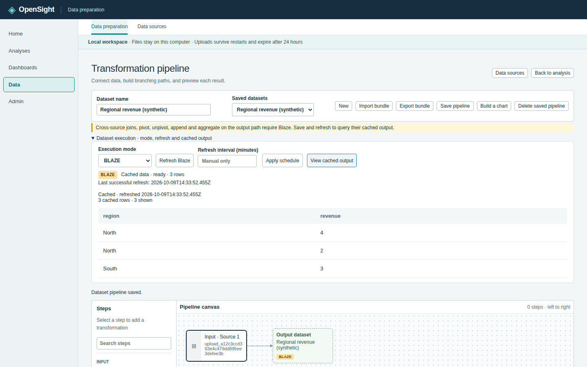
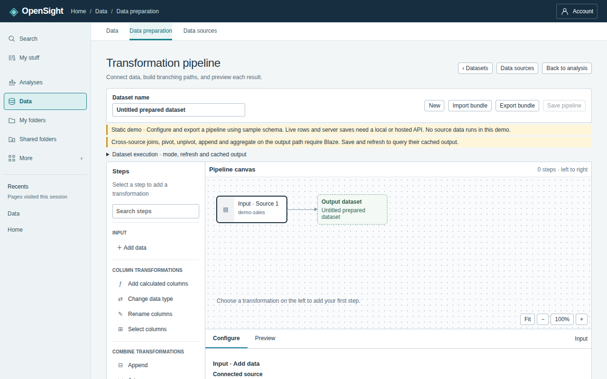
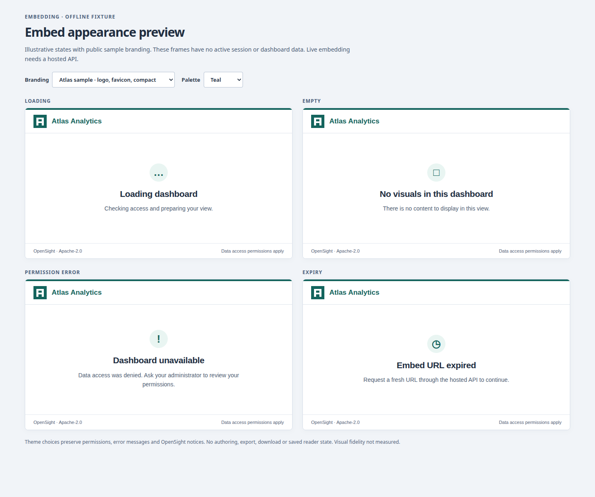
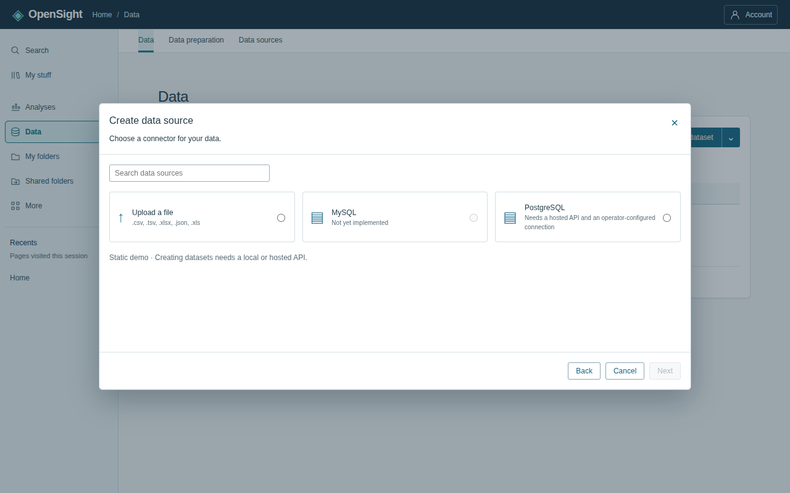

Blaze in-memory engine
Save a data-prep pipeline, refresh Blaze, and the full prepared output is served from bounded in-memory column arrays. Fast queries with no separate cache server and no cloud account.
Open-source business intelligence
Connect data, prepare datasets, build analyses and dashboards, and ask questions in natural language — self-hosted, with no AWS required.
Apache-2.0 licensed · runs on your own machine
Real product footage: dashboard → ask “revenue by region” → data prep → connectors
Authoring, preparation, and embedding — one coherent platform.

Save a data-prep pipeline, refresh Blaze, and the full prepared output is served from bounded in-memory column arrays. Fast queries with no separate cache server and no cloud account.

Select fields, add calculations, join sources, branch pipelines, pivot and aggregate — on a visual canvas. Save the pipeline and build every visual on top of it.

Put dashboards, visuals, natural-language Q, or the full authoring console inside your own app with signed embed URLs — anonymous and registered sessions, your domain policy.
Supporting proof point
OpenSight is built for QuickSight capability parity and bidirectional asset compatibility: import and export analysis bundles, and work with tenancy, identity, and embedding API shapes that match what QuickSight teams already know.

The whole platform — bundle parser, query engines, authoring UI, embedding SDK — is public source on GitHub. No open-core split, no license cliff. Star it, fork it, run it.
Node 24+ and npm, a local checkout, and two terminals.
# clone and install
git clone https://github.com/tomesposito/opensight.git
cd opensight && npm ci
# terminal 1 — build and start the API
npm run build --workspace @opensight/api
npm start --workspace @opensight/api
# terminal 2 — start the web app, then open http://127.0.0.1:5173
npm run dev --workspace @opensight/webUpload a CSV to begin, or try the labeled synthetic sales dataset. Uploads stay on your machine in a local DuckDB file.